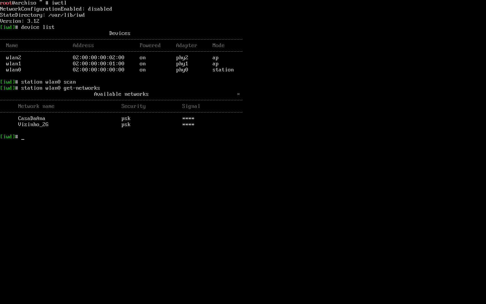
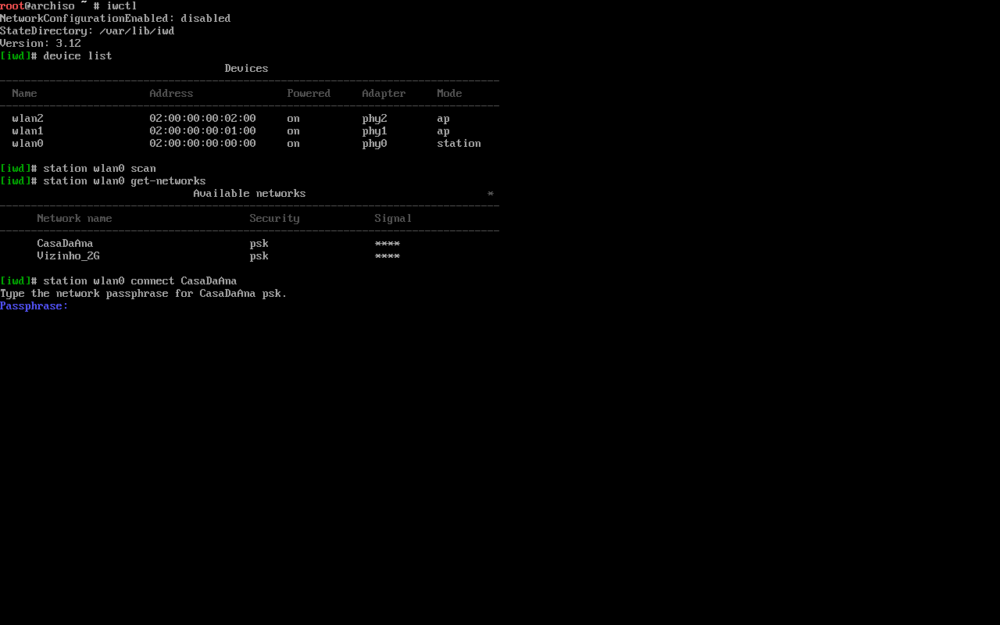
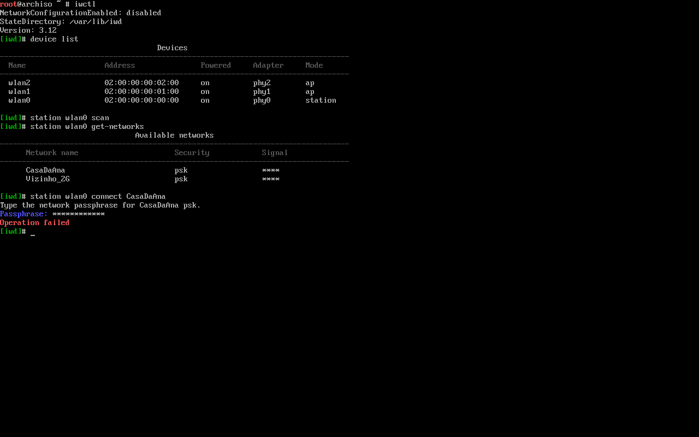

Arch: internet no live (Wi-Fi, cabo, celular)
O pendrive do Arch não traz o sistema pronto: ele baixa tudo da internet na hora de instalar. Com cabo, a internet costuma funcionar sozinha. Com Wi-Fi, não: você precisa escolher a rede e digitar a senha no terminal, com o iwctl, antes de rodar o pacstrap ou o archinstall. Nesta aula você aprende a fazer isso passo a passo, e também a usar a internet do celular pelo cabo USB e um modem 4G, para quem não tem cabo de rede.
- Descobrir se o live já tem internet (
ping) e qual placa de rede o computador tem (ip link). - Conectar no Wi-Fi com o
iwctl, passo a passo, e entender cada linha que ele mostra (inclusive a senha errada). - Destravar o Wi-Fi bloqueado (
rfkill) e o que fazer quando o adaptador Wi-Fi USB nem aparece. - Usar a internet do celular pelo cabo USB (ancoragem) e um modem 4G/5G (
mmcli). - Garantir que o Arch instalado também tenha rede e Wi-Fi (o erro clássico de quem esquece).
O live fala inglês: as mensagens aparecem como você vai vê-las e são traduzidas logo abaixo. Tudo foi rodado no ambiente live real da ISO de 1º de junho de 2026 (kernel 7.0.10-arch1-1, iwd 3.12), numa máquina virtual com placas Wi-Fi virtuais. As quatro telas do iwctl são capturas do console dessa VM. O que não deu para testar (celular, modem de verdade, adaptador USB) está marcado como ilustrativo. Como o laboratório foi montado, e o que muda no seu computador, está explicado em Como o laboratório foi feito.
Por que o live precisa de internet
A ISO do Arch tem cerca de 1,5 GB, mas quase tudo isso é o próprio ambiente live (o sistema temporário que roda do pendrive, veja O Ambiente Live). Os pacotes do Arch que vão para o seu disco não estão no pendrive: o pacstrap baixa cada um dos repositórios na hora (na instalação do guia, foram 193 pacotes e 765 MiB). O archinstall faz o mesmo por trás dos menus. Por isso:
- Sem internet, não há instalação. O
pacstrappara logo no começo comfailed to synchronize all databases. - A internet só precisa existir durante a instalação. O sistema instalado vai ter o próprio programa de rede (veja Depois da instalação).
- Qualquer forma de internet serve: cabo, Wi-Fi, o celular pelo cabo USB, um modem 4G. Esta aula ensina as quatro.
Quem cuida da rede no live
Quatro serviços já vêm ligados no live. Você não precisa ligar nenhum, mas saber que eles existem ajuda a entender o resto da aula:
#> systemctl is-active ModemManager iwd systemd-networkd systemd-resolved active active active active
| Serviço | O que faz no live | Você conversa com ele por |
|---|---|---|
systemd-networkd | Pede um endereço IP ao roteador (DHCP) para toda placa que se conectar: cabo, Wi-Fi, celular, modem. | nada (é automático); networkctl mostra o estado |
iwd | Cuida só do Wi-Fi: procura redes, manda a senha, conecta. (iNet wireless daemon, um programa da Intel para Wi-Fi.) | iwctl |
ModemManager | Conversa com modems 4G/5G (WWAN) e com o chip de dados. | mmcli |
systemd-resolved | Traduz nomes (archlinux.org) em números IP: o DNS. | nada (é automático) |
Repare na divisão de tarefas: o iwd só "entra" na rede Wi-Fi; quem pede o endereço IP depois disso é o systemd-networkd. Você vai ver isso aparecer no iwctl, na linha NetworkConfigurationEnabled: disabled.
Passo 0: já tenho internet? ping
Antes de qualquer coisa, teste. Se você está com cabo, provavelmente já está tudo certo.
- ping
- Manda pacotes de teste para um endereço e espera a resposta.
- -c 3
- (count, "contagem") Manda só 3 pacotes e para. Sem isso, o
pingcontinua para sempre: pare com Ctrl+C. - archlinux.org
- O site do Arch. Testar um nome (e não um número) confere também o DNS.
Saída real, no live da VM do guia (que tem cabo):
#> ping -c 3 archlinux.org PING archlinux.org (209.126.35.79) 56(84) bytes of data. « o nome virou número: o DNS funciona 64 bytes from 209.126.35.79: icmp_seq=1 ttl=64 time=44.0 ms « uma resposta, em 44 milissegundos 64 bytes from 209.126.35.79: icmp_seq=2 ttl=64 time=42.5 ms 64 bytes from 209.126.35.79: icmp_seq=3 ttl=64 time=55.2 ms --- archlinux.org ping statistics --- 3 packets transmitted, 3 received, 0% packet loss, time 5616ms « 3 enviados, 3 recebidos: internet ok rtt min/avg/max/mdev = 42.522/47.247/55.200/5.656 ms #> echo $? 0
| Você viu | O que quer dizer | O que fazer |
|---|---|---|
3 received, 0% packet loss e código 0 | Há internet e DNS. | Pode pular para Particionar o Disco (ou rodar o archinstall). |
ping: archlinux.org: Temporary failure in name resolution ("falha temporária na resolução de nomes") | Sem conexão nenhuma, ou sem DNS. É o que aparece num notebook só com Wi-Fi, antes do iwctl. (Mensagem ilustrativa: a VM tinha cabo.) | Siga esta aula a partir de Que placa você tem. |
Destination Host Unreachable ou 100% packet loss (código 1) | A placa tem endereço, mas os pacotes não chegam: roteador sem internet, Wi-Fi de hotel pedindo login, sinal ruim. | Veja Quando não funciona. |
Que placa você tem: ip link
Uma placa de rede (ou interface) é a peça que liga o computador a uma rede: a entrada do cabo, a antena Wi-Fi, o celular ligado no USB. O ip link lista todas as que o Linux reconheceu.
- ip
- A ferramenta de rede do Linux (pacote
iproute2, já no live). - link
- Mostra as placas e o estado de cada uma (sem os endereços IP).
Saída real no live do laboratório, que tem uma placa com cabo e placas Wi-Fi (as wlan1, wlan2 e hwsim0 são peças do laboratório, explicadas mais abaixo):
#> ip link
1: lo: <LOOPBACK,UP,LOWER_UP> mtu 65536 qdisc noqueue state UNKNOWN mode DEFAULT group default qlen 1000
link/loopback 00:00:00:00:00:00 brd 00:00:00:00:00:00
2: enp0s3: <BROADCAST,MULTICAST,UP,LOWER_UP> mtu 1500 qdisc fq_codel state UP mode DEFAULT group default qlen 1000 « cabo, conectado
link/ether 08:00:27:3e:44:95 brd ff:ff:ff:ff:ff:ff
altname enx0800273e4495
6: hwsim0: <BROADCAST,MULTICAST> mtu 1500 qdisc noop state DOWN mode DEFAULT group default qlen 1000 « peça do laboratório
link/ieee802.11/radiotap 12:00:00:00:00:00 brd ff:ff:ff:ff:ff:ff
7: wlan0: <NO-CARRIER,BROADCAST,MULTICAST,UP> mtu 1500 qdisc noqueue state DOWN mode DORMANT group default qlen 1000 « Wi-Fi, ainda sem rede
link/ether 02:00:00:00:00:00 brd ff:ff:ff:ff:ff:ff
8: wlan1: <BROADCAST,MULTICAST,UP,LOWER_UP> mtu 1500 qdisc noqueue state UP mode DEFAULT group default qlen 1000 « o "roteador" do laboratório
link/ether 02:00:00:00:01:00 brd ff:ff:ff:ff:ff:ff
9: wlan2: <BROADCAST,MULTICAST,UP,LOWER_UP> mtu 1500 qdisc noqueue state UP mode DEFAULT group default qlen 1000 « o "vizinho" do laboratório
link/ether 02:00:00:00:02:00 brd ff:ff:ff:ff:ff:ff
Num notebook comum você veria só três: lo, a placa de cabo (se existir) e a de Wi-Fi. Cada placa ocupa duas linhas:
| Parte | O que quer dizer |
|---|---|
7: | Um número de ordem. Não importa. |
wlan0 | O nome da placa. É ele que você vai digitar nos comandos (tabela abaixo). |
<…UP…> | A placa está ligada. |
LOWER_UP | Há "sinal": o cabo está encaixado, ou o Wi-Fi está conectado a uma rede. |
NO-CARRIER | "Sem portadora": ligada, mas sem cabo (ou, no Wi-Fi, sem rede conectada). No wlan0 acima é o normal antes do iwctl. |
state UP / state DOWN | Pronta para uso / sem conexão. |
mode DORMANT | "Adormecida": o jeito do Linux marcar uma placa Wi-Fi que espera alguém (o iwd) autenticar numa rede. |
link/ether 02:00:… | O endereço físico (MAC) da placa. |
O nome diz o tipo da placa
| O nome começa com | Tipo | Exemplos | Como conectar |
|---|---|---|---|
lo | "Loopback": a máquina falando com ela mesma. Sempre existe. | lo | ignore |
en (ethernet) | Cabo de rede | enp0s3, enp3s0, eno1 | sozinho (encaixe o cabo) |
wl (wireless LAN) | Wi-Fi | wlan0 no live; wlp2s0 no sistema instalado | iwctl |
ww (wireless WAN) | Modem 4G/5G interno ou USB | wwan0, wwp0s20f0u3i12 | mmcli |
usb0 ou en…u… | Celular ligado no USB com ancoragem, ou adaptador de cabo USB | usb0, enp0s20f0u2 (o u2 = porta USB 2) | sozinho (celular por USB) |
Por que wlan0 e não wlp2s0? Normalmente o Linux dá às placas nomes que dizem onde elas estão encaixadas (enp0s3 = barramento PCI 0, encaixe 3). O pacote iwd desliga essa regra para as placas Wi-Fi com este arquivo real da ISO, que manda manter o nome que o kernel deu (NamePolicy=keep kernel):
[Match] Type=wlan [Link] NamePolicy=keep kernel
Por isso, no live, a primeira placa Wi-Fi quase sempre é wlan0, e é esse nome que os exemplos usam. Se a sua tiver outro nome, troque nos comandos.
Qual caminho seguir
O que o ip link mostrou | Vá para |
|---|---|
Uma placa en… com LOWER_UP e o ping funcionou | Nada a fazer: siga para Particionar o Disco. |
Uma placa wl… (ou wlan0) | Wi-Fi com iwctl |
Nenhuma wl…, mas você tem Wi-Fi (placa interna ou adaptador USB) | O Wi-Fi não aparece |
| Sem cabo e sem Wi-Fi funcionando, mas tem um celular com dados ou Wi-Fi | Internet do celular por USB |
Uma placa ww… (notebook com chip) | Modem 4G/5G |
Com cabo: não faça nada
Encaixe o cabo no roteador e no computador. Em poucos segundos o systemd-networkd pede um endereço ao roteador (DHCP: o roteador "empresta" um número IP para cada aparelho) e a internet funciona. Teste com ping -c 3 archlinux.org. O "porquê" desse automático está no arquivo 20-ethernet.network, explicado em Internet do celular por USB, porque é ele que também faz o celular funcionar sozinho.
Wi-Fi com iwctl, passo a passo
O iwctl (iwd control) é o programa que conversa com o iwd. Ele pode ser usado de dois jeitos: entrando nele (um "terminal dentro do terminal", com prompt próprio) ou numa linha só. Primeiro o jeito interativo, que é o que a tela de boas-vindas do live sugere (For Wi-Fi, authenticate to the wireless network using the iwctl utility).
- O nome exato da sua rede Wi-Fi (maiúsculas e minúsculas contam:
CasaDaAnanão écasadaana). - A senha do Wi-Fi. Se ela tem letras com acento ou ç, troque o teclado antes (
loadkeys br-abnt2, em O Ambiente Live).
- Entre no iwctl. Digite
iwctle Enter. Ele mostra três linhas e troca o prompt deroot@archiso ~ #para[iwd]#. A partir daqui, você digita comandos do iwctl, não do shell. - Veja o nome da placa:
device list. - Mande procurar redes:
station wlan0 scan. Não aparece nada; espere 2 ou 3 segundos. - Liste as redes encontradas:
station wlan0 get-networks. - Conecte:
station wlan0 connect CasaDaAnae digite a senha quando ele pedir. - Confira:
station wlan0 showtem de dizerState connected. - Saia com
exite teste comping -c 3 archlinux.org.
Agora cada passo com a tela real.
Passos 1 a 4: entrar, ver a placa e procurar redes

iwctl aberto, a lista de placas e as duas redes encontradas.O que aparece logo ao entrar:
| Linha | Tradução | O que quer dizer |
|---|---|---|
NetworkConfigurationEnabled: disabled | configuração de rede ativada: desativada | O iwd só vai entrar na rede Wi-Fi; o endereço IP fica por conta do systemd-networkd. É assim mesmo no live; não é erro. |
StateDirectory: /var/lib/iwd | pasta de estado | Onde o iwd guarda as redes que você conectar (com a senha). Veja Redes salvas. |
Version: 3.12 | versão | A versão do iwd da ISO de junho de 2026. A sua pode ser outra; os comandos são os mesmos. |
[iwd]# | — | O prompt do iwctl. Enquanto ele aparecer, comandos do shell (ls, ping) não funcionam aqui dentro. |
Dentro do iwctl, a tecla Tab completa comandos, nomes de placas e até nomes de redes: station wlan0 connect CaTab vira CasaDaAna. É o jeito mais seguro de acertar maiúsculas e espaços. help lista todos os comandos.
Passo 2, device list ("listar dispositivos"): uma linha por placa Wi-Fi.
| Coluna | Valor do wlan0 | O que quer dizer |
|---|---|---|
Name | wlan0 | O nome da placa. Anote: vai em todos os comandos seguintes. |
Address | 02:00:00:00:00:00 | O MAC da placa (este é de placa virtual; o seu será diferente). |
Powered | on | Ligada. Se estiver off, veja Wi-Fi bloqueado. |
Adapter | phy0 | O "rádio" físico por trás da placa. Você raramente usa. |
Mode | station | "Estação": o modo cliente, o que se conecta a um roteador. É o que você quer. ap (access point) é o modo roteador. |
No seu computador só aparece a sua placa. Na tela do laboratório aparecem também wlan1 e wlan2 em modo ap: são as placas virtuais que fazem o papel do roteador e do vizinho (veja Como o laboratório foi feito).
Passo 3, station wlan0 scan ("estação wlan0, procurar"): manda a placa ouvir as redes em volta. Não mostra nada, e está certo: a procura acontece por trás, em uns segundos.
Passo 4, station wlan0 get-networks ("obter redes"): mostra o que a procura achou.
| Coluna | O que quer dizer |
|---|---|
Network name | O nome da rede (o "SSID"), escrito exatamente como você vai ter de digitar. |
Security | psk = rede com senha (WPA2/WPA3 "Personal", a de casa); open = aberta, sem senha; 8021x = rede corporativa ou de universidade (usuário + senha, como a eduroam), que precisa de um arquivo de configuração (veja a Arch Wiki, página iwd). |
Signal | A força do sinal, de * a ****. Com 1 estrela a conexão pode falhar; chegue mais perto do roteador. |
> antes do nome | Aparece depois de conectar: marca a rede em que você está (veja na última captura). |
Se a sua rede não aparece, rode o scan de novo e espere um pouco mais. Rede que não aparece nunca pode estar oculta, longe demais ou só em 5 GHz numa placa que só tem 2,4 GHz.
Passo 5: conectar e digitar a senha
- station
- Fale com a placa no modo cliente ("estação").
- wlan0
- Qual placa (a do
device list). - connect
- Conectar.
- CasaDaAna
- O nome da rede, exatamente como no
get-networks.

iwctl pedindo a senha da rede.Type the network passphrase for CasaDaAna psk.= "Digite a senha da rede CasaDaAna (psk)".Passphrase:= "Senha:". Digite a senha do Wi-Fi e aperte Enter.- Enquanto você digita, cada letra vira um
*. Dá para contar se o número de caracteres bate com o da senha (nas capturas abaixo: 12 asteriscos para uma senha de 12 letras, 13 para a de 13).
Passo 6, se a senha estiver errada: "Operation failed"

Operation failed em vermelho, e o prompt [iwd]# de volta.Operation failed = "a operação falhou". O iwctl não diz que a senha está errada, só que não conseguiu. Com senha errada, a rede não é salva: basta repetir o station wlan0 connect CasaDaAna e digitar de novo, com calma. Confira Caps Lock, o teclado (loadkeys br-abnt2) e os caracteres parecidos (l/1, O/0).
Curioso para ver o motivo? O kernel registra cada tentativa. Este é o trecho real do dmesg (as mensagens do kernel) do laboratório numa tentativa com senha errada (na rede Vizinho_2G, cujo roteador é o 02:00:00:00:02:00):
#> dmesg | grep wlan0 … [ 601.659705] wlan0: authenticated « a placa achou o roteador [ 601.660135] wlan0: associated « e entrou na fila dele [ 606.661120] wlan0: deauthenticating from 02:00:00:00:02:00 by local choice (Reason: 15=4WAY_HANDSHAKE_TIMEOUT) « mas a senha não bateu …
4WAY_HANDSHAKE_TIMEOUT é o "aperto de mão em 4 etapas" do WPA2, a troca em que os dois lados provam que sabem a mesma senha. Ele não terminou: a senha não confere. Depois de 5 segundos tentando, a placa desiste.
Passo 6, com a senha certa: silêncio, e o show
![Console do live: segunda tentativa de station wlan0 connect CasaDaAna, Passphrase com treze asteriscos e nenhuma mensagem; depois station wlan0 show com a tabela Station: wlan0: Scanning no, State connected, Connected network CasaDaAna, IPv4 address 192.168.50.144, ConnectedBss, Frequency 2437, Channel 6, Security WPA2-Personal, RSSI -30 dBm, AverageRSSI, TxMode 802.11n, TxMCS 15, TxBitrate 300000 Kbit/s, RxBitrate 2000 Kbit/s, ExpectedThroughput 60093 Kbit/s, InactiveTime 5794 ms, ConnectedTime 12 s](img/iwctl-5-show.png)
iwctl não diz nada e volta ao prompt. O station wlan0 show confirma State connected. Na lista de redes acima, a > agora marca a CasaDaAna.Com a senha certa, nenhuma mensagem aparece: o prompt [iwd]# simplesmente volta. Como em quase todo o Linux, silêncio quer dizer sucesso. Para ter certeza, peça o estado da placa com station wlan0 show ("mostrar"). Linha por linha:
| Linha | Valor | O que quer dizer |
|---|---|---|
Scanning | no | Não está procurando redes agora. |
State | connected | A linha que importa. connected = conectado. Outros valores: disconnected (desconectado), connecting (conectando: espere e repita o show), roaming (trocando de antena na mesma rede). |
Connected network | CasaDaAna | A rede em que você entrou. |
IPv4 address | 192.168.50.144 | O endereço que o roteador emprestou (DHCP). Se esta linha não aparece, a placa entrou no Wi-Fi mas ainda não ganhou endereço: espere uns segundos e repita. |
ConnectedBss | 02:00:00:00:01:00 | O MAC da antena do roteador. Útil só quando a casa tem vários roteadores com o mesmo nome. |
Frequency | 2437 | A frequência em MHz: 2437 = faixa de 2,4 GHz. Valores acima de 5000 são a faixa de 5 GHz (mais rápida, alcance menor). |
Channel | 6 | O canal do Wi-Fi dentro da faixa. |
Security | WPA2-Personal | O tipo de proteção: WPA2 com senha (o comum em casa). Também existe WPA3-Personal, mais novo. |
RSSI / AverageRSSI | -30 dBm | A força do sinal agora / na média, em dBm (sempre negativo; mais perto de zero é melhor). Como referência: −30 excelente, −50 ótimo, −67 bom, −75 fraco, abaixo de −80 a conexão cai. No laboratório é −30 porque o "roteador" está dentro da mesma máquina. |
TxMode | 802.11n | O padrão de Wi-Fi em uso: 802.11n = Wi-Fi 4; 802.11ac = Wi-Fi 5; 802.11ax = Wi-Fi 6. |
TxMCS | 15 | O "nível" de modulação escolhido (quanto maior, mais rápido; depende do sinal). |
TxBitrate / RxBitrate | 300000 Kbit/s / 2000 Kbit/s | A velocidade combinada com o roteador para enviar / receber (300000 Kbit/s = 300 Mbit/s). Muda a todo momento. |
ExpectedThroughput | 60093 Kbit/s | A velocidade real que o iwd espera conseguir (uns 60 Mbit/s). |
InactiveTime | 5794 ms | Há quanto tempo a placa não troca dados com o roteador. |
ConnectedTime | 12 s | Há quanto tempo está conectado. |
Passo 7: sair e testar
Saia do iwctl com exit ou quit (ou Ctrl+D). O prompt volta a ser root@archiso ~ #. A conexão continua: quem a mantém é o serviço iwd, não o iwctl. Agora teste a internet:
#> ping -c 3 archlinux.org
No seu computador, a resposta é a do Passo 0 (0% packet loss). No laboratório, o "roteador" é uma placa virtual dentro da mesma máquina e não leva a lugar nenhum, então o ping pela wlan0 não sai para a internet (veja Como o laboratório foi feito).
O que o iwctl devolve (código de saída)
Cada comando do iwctl também pode ser digitado direto no shell, com iwctl na frente (sem entrar nele). Assim dá para ver o código de saída, que diz se deu certo. Saídas reais, pelo SSH, no live do laboratório:
#> iwctl station wlan0 show
Station: wlan0
--------------------------------------------------------------------------------
Settable Property Value
--------------------------------------------------------------------------------
Scanning no
State connected
Connected network CasaDaAna
IPv4 address 192.168.50.144
ConnectedBss 02:00:00:00:01:00
Frequency 2437
Channel 6
Security WPA2-Personal
RSSI -30 dBm
AverageRSSI -30 dBm
TxBitrate 1000 Kbit/s
RxBitrate 2000 Kbit/s
ExpectedThroughput 60093 Kbit/s
InactiveTime 27972 ms
ConnectedTime 121 s
#> echo $?
0
#> iwctl station wlan0 disconnect « desconecta: também não diz nada
#> echo $?
0
#> iwctl station wlan0 show | head -6
Station: wlan0
--------------------------------------------------------------------------------
Settable Property Value
--------------------------------------------------------------------------------
Scanning no
State disconnected « desconectado
Regra geral: sem mensagem e código 0 = deu certo; uma mensagem (como Operation failed) e código 1 = deu errado. (A coluna Settable, vazia aqui, marca com * as propriedades que você pode mudar com set-property.)
A forma em uma linha
Dá para conectar sem entrar no iwctl, passando a senha no próprio comando. É ótimo para copiar e colar (por exemplo, quando você controla o live por SSH, como em O Ambiente Live):
- iwctl
- O programa.
- --passphrase 'senha'
- A senha do Wi-Fi, entre aspas simples (veja abaixo). Vem antes dos outros comandos.
- station wlan0 connect
- O mesmo comando de antes.
- CasaDaAna
- O nome da rede.
#> iwctl station wlan0 scan #> iwctl --passphrase 'senhadaana123' station wlan0 connect CasaDaAna #> echo $? 0 #> iwctl --passphrase 'senhaerrada1' station wlan0 connect Vizinho_2G « senha errada Operation failed #> echo $? 1
Mesmas regras: certo = silêncio e 0; errado = Operation failed e 1.
- Por que aspas simples? Senhas costumam ter símbolos que o shell entende como comandos:
$,!,&,*, espaço. Dentro de'…', o shell não mexe em nada. (Só a própria aspa simples não pode estar dentro; mais em Sintaxe dos Comandos.) - A senha fica visível na tela e no histórico do shell (a seta para cima mostra). No live isso some ao desligar, mas não faça isso com alguém olhando.
--dont-ask("não pergunte") faz oiwctlfalhar em vez de pedir a senha. Sem senha, a resposta real éNo Agent registered("nenhum agente registrado": ninguém para perguntar a senha) e código1. Só serve em scripts.
Nome de rede com espaço: aspas
Se a rede se chama Rede da Ana, o shell (e o próprio iwctl) entenderia três palavras. Ponha o nome entre aspas:
#> iwctl station wlan0 connect "Rede da Ana" Invalid network name 'Rede da Ana'
Repare: a mensagem mostra o nome inteiro, 'Rede da Ana', então as aspas funcionaram (o nome chegou em uma peça só). O erro, aqui, é só porque não existe rede com esse nome no laboratório. No seu, com a rede por perto, ele pede a senha normalmente. Dentro do iwctl vale o mesmo: [iwd]# station wlan0 connect "Rede da Ana", ou use o Tab, que já põe as aspas.
Rede oculta: connect-hidden
Uma rede oculta é uma rede cujo roteador não anuncia o nome. Ela funciona, mas não aparece no get-networks; quem a usa precisa saber o nome e digitá-lo. (Esconder o nome não deixa a rede mais segura; é só um incômodo.) Para ela, o comando é outro:
- station wlan0
- A placa, como antes.
- connect-hidden
- "Conectar a uma rede oculta": a placa chama a rede pelo nome em vez de esperar que ela se anuncie.
- RedeEscondida
- O nome exato da rede oculta.
#> iwctl station wlan0 connect-hidden RedeEscondida Object not found #> echo $? 1
Object not found ("objeto não encontrado") é a resposta real quando não há nenhuma rede oculta com esse nome por perto (o laboratório não tem rede oculta). Com a rede certa, ele pede a senha como no connect.
Redes salvas: known-networks
Toda rede em que você conecta com sucesso fica salva ("rede conhecida"). Se a conexão cair, o iwd reconecta sozinho, sem pedir a senha. No live isso dura até desligar.
#> iwctl known-networks list
Known Networks
--------------------------------------------------------------------------------
Name Security Hidden Last connected
--------------------------------------------------------------------------------
CasaDaAna psk Oct 16, 7:02 PM
#> iwctl known-networks CasaDaAna show
Known Network: CasaDaAna
--------------------------------------------------------------------------------
Settable Property Value
--------------------------------------------------------------------------------
Name CasaDaAna
Hidden
* AutoConnect yes « reconecta sozinho
A lista tem o nome, o tipo de segurança, se a rede é oculta (Hidden) e a última conexão (o live está em UTC: 7:02 PM = 19h02 UTC = 16h02 em Brasília). A senha fica num arquivo dentro da pasta StateDirectory que o iwctl mostrou ao abrir:
#> ls -l /var/lib/iwd/ total 4 -rw------- 1 root root 466 Oct 16 19:02 CasaDaAna.psk « a rede salva (só o root lê) drwx------ 2 root root 40 Oct 16 18:57 hotspot #> cat /var/lib/iwd/CasaDaAna.psk [Security] PreSharedKey=24834ce1d9223fc80147c6d34ff9db4ba605567e69a87dac8c36c84f2d72eec1 Passphrase=senhadaana123 « a senha, em texto puro SAE-PT-Group19=f81e95ff87806542389a5e24b0744077… SAE-PT-Group20=ce94bea4b09e4c695a85e1b2dc17286d…
| Parte | O que é |
|---|---|
CasaDaAna.psk | O nome do arquivo é o nome da rede + o tipo (.psk, .open ou .8021x). Nomes com espaço, acento ou símbolo viram um código que começa com = (o nome em hexadecimal). |
-rw------- root | Só o root lê e escreve: a senha está aí dentro. |
PreSharedKey= | A chave que o WPA2 realmente usa, calculada a partir da senha e do nome da rede. |
Passphrase= | A senha que você digitou, sem disfarce. |
SAE-PT-Group19/20= | Chaves pré-calculadas para o WPA3 (encurtadas com …). |
Para esquecer uma rede (digitou a senha certa da rede errada, ou vai entregar o computador):
#> iwctl known-networks CasaDaAna forget
#> iwctl known-networks list
Known Networks
--------------------------------------------------------------------------------
Name Security Hidden Last connected
--------------------------------------------------------------------------------
Silêncio de novo, e a lista vazia confirma. O arquivo .psk some junto.
Formas diferentes de conectar no Wi-Fi do live
| Forma | Exemplo | Bom para |
|---|---|---|
Interativa (entrar no iwctl) | iwctl → station wlan0 connect CasaDaAna → senha | A primeira vez. Tem Tab, a senha não aparece e não fica no histórico. |
| Comando por comando no shell | iwctl station wlan0 get-networks | Ver o código de saída, usar com grep ou head. |
| Uma linha com a senha | iwctl --passphrase 'senha' station wlan0 connect CasaDaAna | Copiar e colar por SSH; repetir depois de reiniciar o live. |
| Rede oculta | iwctl station wlan0 connect-hidden REDE | Só quando o nome não aparece no get-networks. |
Qual usar? A interativa. Use a de uma linha quando estiver colando comandos e ninguém estiver olhando a tela.
Wi-Fi bloqueado: rfkill
Notebooks têm um "modo avião": uma tecla (Fn+F2, Fn+F12, uma com desenho de antena ou avião) ou, nos mais antigos, uma chavinha na lateral. Ela desliga o rádio. O Linux chama isso de rfkill (radio frequency kill, "desligar o rádio").
#> rfkill list 0: phy0: Wireless LAN Soft blocked: no Hard blocked: no 1: phy1: Wireless LAN Soft blocked: no Hard blocked: no 2: phy2: Wireless LAN Soft blocked: no Hard blocked: no #> rfkill ID TYPE DEVICE SOFT HARD 0 wlan phy0 unblocked unblocked 1 wlan phy1 unblocked unblocked 2 wlan phy2 unblocked unblocked
(No seu notebook aparece um rádio só para o Wi-Fi, e talvez um de Bluetooth. Os três phy são as placas do laboratório.)
| Linha | Tradução | Se for yes / blocked |
|---|---|---|
phy0: Wireless LAN | rádio phy0: rede sem fio | — (é o Adapter do device list) |
Soft blocked | bloqueado por software | Desligado por um programa ou por uma tecla que avisa o sistema. Destrava com rfkill unblock wifi. |
Hard blocked | bloqueado por hardware | Desligado por uma chave física ou pelo firmware. Nenhum comando destrava: use a chave, a tecla de modo avião, ou ligue o Wi-Fi no setup da BIOS/UEFI. |
Veja o que acontece com o Wi-Fi bloqueado. Sequência real do laboratório (o bloqueio foi feito de propósito com rfkill block wifi):
#> rfkill block wifi « simulando o modo avião
#> iwctl device list
Devices
--------------------------------------------------------------------------------
Name Address Powered Adapter Mode
--------------------------------------------------------------------------------
wlan2 02:00:00:00:02:00 off phy2 ap
wlan1 02:00:00:00:01:00 off phy1 ap
wlan0 02:00:00:00:00:00 off phy0 station « Powered off
#> iwctl station wlan0 scan
No station on device: 'wlan0'
#> echo $?
1
#> rfkill unblock wifi « destrava (não mostra nada)
#> rfkill list | head -3
0: phy0: Wireless LAN
Soft blocked: no
Hard blocked: no
No station on device: 'wlan0' = "não há estação no dispositivo wlan0": a placa existe, mas está desligada (Powered off), então não há "modo cliente" para procurar redes. A mesma mensagem aparece se você usar uma placa que está em outro modo (no laboratório, iwctl station wlan1 scan responde No station on device: 'wlan1', porque a wlan1 é o roteador).
Se depois do rfkill unblock wifi a placa continuar off no device list, ligue-a pelo iwctl:
- iwctl device wlan0
- A placa
wlan0. - set-property
- "Mudar propriedade" (as marcadas com
*noshow). - Powered on
- Ligada: sim.
#> iwctl device wlan0 set-property Powered on
#> echo $?
0
#> iwctl device wlan0 show
Device: wlan0
--------------------------------------------------------------------------------
Settable Property Value
--------------------------------------------------------------------------------
Name wlan0
* Mode station
* Powered on
Address 02:00:00:00:00:00
Adapter phy0
Se nem assim ligar, o rádio inteiro (o phy0) pode estar desligado: iwctl adapter phy0 set-property Powered on. Com Hard blocked: yes, nenhum dos dois funciona: só a chave ou a tecla.
O Wi-Fi não aparece no ip link
Se o ip link não mostra nenhuma placa wl… (e o iwctl device list vem vazio), o Linux do live não reconheceu a sua placa Wi-Fi. Isso acontece principalmente com adaptadores Wi-Fi USB baratos (os "pen drives de antena") e com placas muito novas. Investigue em dois passos.
1. O computador vê o aparelho? lsusb
O lsusb (list USB, pacote usbutils 019, que vem na ISO) lista tudo o que está ligado nas portas USB, com o fabricante e o modelo do chip. Para placas internas, o equivalente é lspci (pacote pciutils, também na ISO).
#> lsusb Bus 001 Device 001: ID 1d6b:0002 Linux Foundation 2.0 root hub Bus 001 Device 003: ID 0bda:b812 Realtek Semiconductor Corp. RTL88x2bu [AC1200 Techkey] « o adaptador Wi-Fi Bus 002 Device 001: ID 1d6b:0003 Linux Foundation 3.0 root hub
Saída ilustrativa: a VM do laboratório não tem nenhum aparelho USB, e o lsusb real nela não mostrou nada (código 1). Na linha do adaptador, o que interessa é o ID 0bda:b812: 0bda é o código do fabricante (0bda = Realtek) e b812 o do produto. Com esse ID você pesquisa "0bda:b812 linux" e descobre qual é o chip e qual driver ele usa. Se o adaptador nem aparece no lsusb, troque de porta USB ou teste o adaptador em outro computador.
2. O kernel reclamou de algo? dmesg
- dmesg
- Mostra as mensagens do kernel desde o boot (o que ele detectou e o que falhou).
- | grep -i -E
- Filtra só as linhas que interessam, sem diferenciar maiúsculas (
-i), aceitando "ou" com|(-E). Veja grep. - 'firmware|wlan|rtl'
- Linhas que falam de firmware, de placas Wi-Fi (
wlan) ou de chips Realtek (rtl).
Num computador com o problema, o sinal típico é uma linha de firmware que faltou (ilustrativa):
#> dmesg | grep -i -E 'firmware|wlan|rtl' [ 6.112233] usb 1-3: Direct firmware load for rtw88/rtw8822b_fw.bin failed with error -2 « faltou o firmware
(Direct firmware load … failed with error -2 = "a carga do firmware … falhou, erro −2", isto é, arquivo não encontrado.) Se não aparece nenhuma linha sobre o adaptador, o kernel não tem driver para ele. No laboratório, o mesmo comando mostrou só as conexões da placa virtual (wlan0: authenticated, wlan0: associated), sinal de que ali estava tudo bem.
Por que alguns adaptadores não funcionam no live
Uma placa precisa de duas coisas: um driver (o código que o kernel usa para falar com ela) e, quase sempre, um firmware (um programinha que roda dentro da própria placa). A ISO traz o pacote linux-firmware inteiro e os drivers que fazem parte do kernel. O kernel da ISO de junho de 2026 (7.0.10) já traz drivers para muitos chips Realtek USB; esta é a lista real dos módulos com u (de USB) no fim:
#> ls /usr/lib/modules/$(uname -r)/kernel/drivers/net/wireless/realtek/rtw88/ | grep 'u\.ko' rtw88_8723du.ko.zst rtw88_8812au.ko.zst rtw88_8814au.ko.zst rtw88_8821au.ko.zst rtw88_8821cu.ko.zst rtw88_8822bu.ko.zst rtw88_8822cu.ko.zst #> ls /usr/lib/modules/$(uname -r)/kernel/drivers/net/wireless/realtek/rtw89/ | grep 'u\.ko' rtw89_8851bu.ko.zst rtw89_8852au.ko.zst rtw89_8852bu.ko.zst rtw89_8852cu.ko.zst
(O grep 'u\.ko' deixa só os nomes terminados em u.ko; o $(uname -r) é trocado pela versão do kernel em uso. Há também o rtl8xxxu, que cobre vários chips Realtek USB antigos.) Se o chip do seu adaptador está nessa lista (8822bu = RTL8822BU, por exemplo), ele deve funcionar no live. Os que ficam de fora (chips mais raros, ou modelos que só funcionam bem com o driver do fabricante) dependem de drivers de fora do kernel: no Arch, são pacotes do AUR com -dkms no nome (DKMS recompila o driver a cada kernel novo). Esses drivers não estão na ISO, e instalá-los exige… internet. Por isso, a saída é:
- Instale o Arch usando outra conexão: cabo ou o celular por USB.
- No sistema instalado, ainda com essa conexão, instale o driver do AUR (o nome do pacote depende do chip: procure pelo número do chip no AUR; veja yay e paru) e o pacote
linux-headers, que o DKMS precisa. - Reinicie e conecte no Wi-Fi com o NetworkManager (Primeiro Boot e Rede).
Meu Wi-Fi não aparece: o que fazer
| O que você vê | Provável causa | O que fazer |
|---|---|---|
wlan0 no ip link, mas Powered off no device list | Modo avião (rfkill) | rfkill list; rfkill unblock wifi; device wlan0 set-property Powered on (acima) |
Hard blocked: yes | Chave física, tecla de Wi-Fi ou opção da BIOS | Ligue na chave, na tecla (Fn+…) ou no setup da BIOS/UEFI |
Nada wl…; o adaptador aparece no lsusb/lspci; dmesg fala de firmware … failed | Falta o arquivo de firmware | Use uma ISO mais nova (o linux-firmware é atualizado todo mês); senão, instale por cabo ou celular e resolva depois |
Nada wl…; o adaptador aparece no lsusb; o dmesg não fala nada dele | Sem driver no kernel (chip fora da lista) | Instale por cabo ou celular; depois, o driver -dkms do AUR |
O adaptador nem aparece no lsusb | Porta, cabo extensor ou o próprio adaptador | Outra porta USB (de preferência direto no computador, sem hub); teste em outro computador |
A placa aparece, mas a sua rede não está no get-networks | Longe do roteador, rede só em 5 GHz numa placa de 2,4 GHz, ou rede oculta | scan de novo; chegue perto; connect-hidden |
Antes de comprar, pesquise o chip (não a marca da caixa) e se ele funciona no Linux "sem driver extra" (in-kernel). E tenha sempre um plano B para o dia da instalação: um cabo de rede ou o celular por USB. Veja também a dica em Baixar e Verificar a ISO.
Internet do celular por USB (ancoragem)
Sem cabo de rede e com o Wi-Fi sem funcionar? O celular resolve. A ancoragem USB (USB tethering) faz o celular emprestar a internet dele para o computador (no Android, os dados móveis ou o Wi-Fi em que ele está conectado; no iPhone, os dados móveis), pelo cabo USB. Para o Linux, o celular vira uma placa de rede com cabo, e por isso funciona sozinho no live, sem driver nem senha.
Ligar no celular
- Ligue o celular no computador com um cabo USB de dados (alguns cabos baratos só carregam).
- Android: abra Configurações → Rede e internet → Ponto de acesso e tethering (o nome muda conforme a marca: "Roteador Wi-Fi e ancoragem", "Hotspot móvel e tethering", "Conexões → Ancoragem") e ligue Tethering USB / Ancoragem USB. A opção só fica disponível com o cabo já conectado.
- iPhone: ligue Ajustes → Acesso Pessoal → Permitir Outras Conexões, conecte o cabo e, se o iPhone perguntar "Confiar neste computador?", toque em Confiar. A ISO traz o
usbmuxd(1.1.1) e o driveripheth, que o iPhone precisa, e ousbmuxdliga sozinho quando o iPhone é conectado. - No live, espere uns 5 segundos e teste com
ping -c 3 archlinux.org.
O que aparece no ip link (ilustrativo: a ancoragem não foi testada no laboratório, que é uma VM sem USB):
#> ip -brief link lo UNKNOWN 00:00:00:00:00:00 <LOOPBACK,UP,LOWER_UP> wlan0 DOWN 3c:a9:f4:12:34:56 <NO-CARRIER,BROADCAST,MULTICAST,UP> enp0s20f0u2 UP 9a:3f:21:c4:5e:07 <BROADCAST,MULTICAST,UP,LOWER_UP> « o celular
O nome da placa nova depende da porta USB e do celular: enp0s20f0u2 (u2 = porta USB 2), enp0s26u1u2c4i2 (comum com iPhone) ou, às vezes, usb0. Os drivers que transformam o celular em placa de rede vêm no kernel da ISO (conferido no live do laboratório: rndis_host, cdc_ether e cdc_ncm para Android, ipheth para iPhone, na pasta drivers/net/usb/).
Por que funciona sozinho: o 20-ethernet.network
O live traz quatro arquivos de configuração do systemd-networkd em /etc/systemd/network/. Este é o que vale para cabo e para o celular (real, da ISO):
[Match] Type=ether # Exclude virtual Ethernet interfaces Kind=!* [Link] RequiredForOnline=routable [Network] DHCP=yes MulticastDNS=yes # systemd-networkd does not set per-interface-type default route metrics # https://github.com/systemd/systemd/issues/17698 # Explicitly set route metric, so that Ethernet is preferred over Wi-Fi and Wi-Fi is preferred over mobile broadband. # Use values from NetworkManager. From nm_device_get_route_metric_default in # https://gitlab.freedesktop.org/NetworkManager/NetworkManager/-/blob/main/src/core/devices/nm-device.c [DHCPv4] RouteMetric=100 [IPv6AcceptRA] RouteMetric=100
| Linha | O que quer dizer |
|---|---|
[Match] Type=ether | "Vale para toda placa do tipo cabo (Ethernet)." O celular em ancoragem se apresenta como Ethernet, então entra aqui. |
Kind=!* | "…menos as virtuais" (pontes, VPNs, containers). O # da linha de cima é um comentário. |
RequiredForOnline=routable | A placa só conta como "online" quando tem rota para fora. |
DHCP=yes | O segredo: pedir um endereço por DHCP a quem estiver do outro lado (o roteador, ou o celular, que faz papel de roteador). |
MulticastDNS=yes | Achar outros aparelhos da rede pelo nome (.local). |
RouteMetric=100 | A "prioridade" desta conexão (quanto menor, mais preferida). Veja qual conexão o live prefere. |
O comentário em inglês diz: "o systemd-networkd não define métricas por tipo de placa; definimos aqui, para que o cabo seja preferido ao Wi-Fi e o Wi-Fi à banda larga móvel, usando os valores do NetworkManager".
Também funciona: ligue o "Ponto de acesso Wi-Fi" (hotspot) do celular e conecte no live com o iwctl, como em qualquer rede. Mas, se o problema é justamente o Wi-Fi do computador, só o cabo USB resolve. Pelo cabo, o celular ainda carrega a bateria enquanto isso.
Modem 4G/5G (WWAN): mmcli
Alguns notebooks (principalmente corporativos) têm um modem de celular interno, com lugar para um chip; também existem modems USB ("modem 4G"). Para o Linux, isso é uma placa ww… (wireless WAN), controlada pelo ModemManager, que o live já deixa ligado. A tela de boas-vindas avisa: For mobile broadband (WWAN) modems, connect with the mmcli utility.
Primeiro, liste os modems. Saída real (a VM não tem modem):
#> mmcli -L No modems were found #> echo $? 0 #> systemctl is-active ModemManager active
No modems were found = "nenhum modem foi encontrado" (o código é 0: não é erro, só a lista vazia). Com um modem, os passos são estes (ilustrativos, sem modem no laboratório; formato da Arch Wiki):
#> mmcli -L
/org/freedesktop/ModemManager1/Modem/0 [Quectel] EM05-G « o modem número 0
#> mmcli -m 0 « detalhes: estado, operadora, sinal
#> mmcli -m 0 --simple-connect="apn=zap.vivo.com.br,user=vivo,password=vivo"
successfully connected the modem
- mmcli
- (ModemManager command line interface) O programa que conversa com o
ModemManager. - -L
- (list) Lista os modems, cada um com um número.
- -m 0
- (modem) Escolhe o modem 0.
- --simple-connect="apn=…"
- Conecta usando o APN (Access Point Name), o "endereço de internet" da operadora. Algumas pedem também usuário e senha (
user=…,password=…).
Exemplos de APN das operadoras brasileiras (outubro de 2026; confira no site da sua operadora, eles mudam e variam entre planos):
| Operadora | APN | Usuário / senha |
|---|---|---|
| Vivo | zap.vivo.com.br | vivo / vivo |
| Claro | claro.com.br | claro / claro |
| TIM | timbrasil.br | tim / tim |
Depois de conectar, quem pede o endereço é de novo o systemd-networkd, com este arquivo real da ISO (parecido com o do cabo; muda o Type e a métrica):
[Match] Type=wwan [Link] RequiredForOnline=routable [Network] DHCP=yes # systemd-networkd does not set per-interface-type default route metrics # https://github.com/systemd/systemd/issues/17698 # Explicitly set route metric, so that Ethernet is preferred over Wi-Fi and Wi-Fi is preferred over mobile broadband. # Use values from NetworkManager. From nm_device_get_route_metric_default in # https://gitlab.freedesktop.org/NetworkManager/NetworkManager/-/blob/main/src/core/devices/nm-device.c [DHCPv4] RouteMetric=700 [IPv6AcceptRA] RouteMetric=700
Alguns modems não entregam o endereço por DHCP: o mmcli -m 0 mostra, na parte do bearer (a conexão de dados), o método static e o endereço que deve ser configurado à mão. Nesse caso, siga a seção Mobile broadband modem da Arch Wiki, ou, mais simples, use o celular por USB.
Cabo, Wi-Fi e celular juntos: qual o live usa?
Você pode ter mais de uma conexão ao mesmo tempo (cabo e Wi-Fi, por exemplo). O live usa a de menor métrica. Os três arquivos 20-*.network da ISO definem:
| Arquivo | Vale para | RouteMetric | Preferência |
|---|---|---|---|
20-ethernet.network | cabo e celular por USB (Type=ether) | 100 | 1ª |
20-wlan.network | Wi-Fi (Type=wlan) | 600 | 2ª |
20-wwan.network | modem 4G/5G (Type=wwan) | 700 | 3ª |
O 20-wlan.network é igual ao do cabo, com Type=wlan e RouteMetric=600. No laboratório, com o cabo e o Wi-Fi conectados ao mesmo tempo, as rotas reais mostram as duas "saídas" (default), e a do cabo ganha:
#> ip -brief address lo UNKNOWN 127.0.0.1/8 ::1/128 enp0s3 UP 10.0.2.15/24 metric 100 fd17:625c:f037:2:a00:27ff:fe3e:4495/64 … « cabo: métrica 100 hwsim0 DOWN wlan0 UP 192.168.50.144/24 metric 600 fe80::ff:fe00:0/64 « Wi-Fi: métrica 600 wlan1 UP 192.168.50.1/24 fe80::ff:fe00:100/64 wlan2 UP fe80::ff:fe00:200/64 #> ip route default via 10.0.2.2 dev enp0s3 proto dhcp src 10.0.2.15 metric 100 « saída pelo cabo (vence) default via 192.168.50.1 dev wlan0 proto dhcp src 192.168.50.144 metric 600 « saída pelo Wi-Fi (reserva) …
default via 10.0.2.2 dev enp0s3 = "para qualquer destino, vá pelo roteador 10.0.2.2, pela placa enp0s3". Se o cabo sair, a rota dele some e o Wi-Fi assume sozinho. Mais sobre ip em ip, ping, ss.
Como o laboratório foi feito
Transparência: a VM do guia não tem placa Wi-Fi de verdade. Para mostrar o iwctl real (e não saídas inventadas), o live foi montado assim:
- O kernel do Linux tem um módulo de teste, o
mac80211_hwsim, que cria placas Wi-Fi virtuais que "conversam" entre si por um ar simulado. Foram criadas três:wlan0,wlan1ewlan2(ohwsim0é o "monitor" desse ar simulado). - A
wlan1faz o papel do roteador da casa, a redeCasaDaAna(senhasenhadaana123): o próprioiwd, em modo ponto de acesso (ap), e um arquivo extra dosystemd-networkdque empresta endereços192.168.50.x. Awlan2é o vizinho, a redeVizinho_2G. - A
wlan0é a placa "do seu notebook": tudo nesta aula foi feito nela, com oiwctlda ISO, sem nada modificado.
O arquivo extra, que só existe no laboratório (no seu live ele não existe):
[Match] Name=wlan1 [Network] Address=192.168.50.1/24 DHCPServer=yes IPMasquerade=ipv4 IPv4Forwarding=yes [DHCPServer] PoolOffset=100 PoolSize=50 EmitDNS=yes DNS=10.0.2.3
Por isso, duas coisas do laboratório são diferentes do seu computador:
- O
device listmostra três placas (duas em modoap). No seu, só a sua. - O
pingpelawlan0não sai para a internet: o "roteador" está na mesma máquina, e e o Linux não manda pelo "ar" simulado um pacote cujo destino é um endereço dele mesmo, então a ida e volta pelo roteador não acontece. Saída real:
#> ping -c 3 -I wlan0 archlinux.org PING archlinux.org (209.126.35.79) from 192.168.50.144 wlan0: 56(84) bytes of data. From archiso (192.168.50.144) icmp_seq=1 Destination Host Unreachable From archiso (192.168.50.144) icmp_seq=2 Destination Host Unreachable From archiso (192.168.50.144) icmp_seq=3 Destination Host Unreachable --- archlinux.org ping statistics --- 3 packets transmitted, 0 received, +3 errors, 100% packet loss, time 2035ms pipe 3
(-I wlan0 obriga o ping a sair pela wlan0.) No seu computador, depois do State connected, o ping -c 3 archlinux.org responde como no Passo 0. A senha também foi digitada no console (como nas capturas), não pelo SSH: o iwctl só pergunta a senha num terminal de verdade.
Depois da instalação: o Wi-Fi não vai junto
Tudo nesta aula vale só para o live. O iwd, o iwctl, o ModemManager, os arquivos 20-*.network e a senha salva em /var/lib/iwd ficam no pendrive. O sistema que o pacstrap instala no disco não tem programa de Wi-Fi nenhum, a não ser que você peça. Quem esquece, reinicia num Arch sem internet e sem como baixar o que falta.
Na instalação manual, são duas providências (o guia já as inclui):
- Instalar um gerenciador de rede junto com o sistema: o
networkmanagerno fim dopacstrap(Espelhos e pacstrap):#> pacstrap -K /mnt base linux linux-firmware intel-ucode networkmanager sudo nano vim man-db man-pages texinfo grub efibootmgr openssh
- Habilitar o serviço, dentro do
arch-chroot(Configurar o Sistema):#> systemctl enable NetworkManager
No primeiro boot, você conecta de novo no Wi-Fi, agora com o nmcli ou o nmtui (Primeiro Boot e Rede; detalhes em NetworkManager e iwd). O linux-firmware do pacstrap também importa: sem ele, a placa Wi-Fi que funcionava no live pode não funcionar no sistema instalado.
No archinstall, o equivalente é o item Network configuration: escolha Use Network Manager (ou Copy ISO network configuration to installation, que leva a configuração do live, com o iwd). Deixar em branco dá o mesmo erro clássico.
| Alternativa ao NetworkManager | Como |
|---|---|
iwd sozinho (leve, o mesmo do live) | pacstrap … iwd, systemctl enable iwd e ligar o DHCP próprio dele (EnableNetworkConfiguration=true em /etc/iwd/main.conf); veja NetworkManager e iwd |
| Só cabo, sem Wi-Fi | Até dá para usar o systemd-networkd (que vem no base), mas para notebook escolha um dos dois acima |
Esqueci! E agora?
Sem gerenciador de rede, o sistema instalado não consegue baixar o próprio gerenciador. A saída é voltar ao pendrive, que tem internet:
- Ligue o computador pelo pendrive do Arch.
- Conecte o live à internet (esta aula: cabo,
iwctlou celular). - Monte a partição raiz do sistema instalado (e a EFI, se for mexer no boot):
mount /dev/sda3 /mnt(use a sua; veja Formatar e Montar). - Entre nele:
arch-chroot /mnt. A partir daqui, os comandos valem para o sistema do disco, mas usando a internet do live. - Instale e habilite:
pacman -S networkmanageresystemctl enable NetworkManager. exit,umount -R /mnt,reboote tire o pendrive.
Se o pacote já estava instalado e só faltou habilitar, nem precisa do pendrive: no sistema instalado, sudo systemctl enable --now NetworkManager.
Confira na máquina da ana
O simulador é o Arch já instalado da VM do guia (não o live: ele não tem iwctl nem rede de verdade). Use-o para conferir o que esta aula ensinou a levar para o sistema novo.
Missão 1: liste as placas de rede da máquina da ana com ip link (ou a versão curta, ip -br link). Pelo nome, ela tem cabo, Wi-Fi ou os dois?
Missão 2: confira com pacman -Q que o gerenciador de rede (networkmanager) foi instalado no sistema da ana.
Missão 3: e o iwd, que o live usou para o Wi-Fi? Pergunte ao pacman -Q se ele está no sistema instalado. O que a resposta prova?
Missão 4: instalar não basta: confira se o serviço do NetworkManager está habilitado para ligar no boot (systemctl is-enabled).
Quando não funciona
#> iwctl station wlan0 connect RedeQueNaoExiste Invalid network name 'RedeQueNaoExiste' #> iwctl station wlan0 connect casadaana Invalid network name 'casadaana'
O que aconteceu: "nome de rede inválido": o iwd não conhece nenhuma rede com esse nome agora. As causas reais: o nome está diferente (o segundo exemplo: a rede é CasaDaAna, e maiúsculas contam), a rede está fora do alcance, ou você não fez o scan antes (a lista do iwd estava vazia ou velha). No laboratório, esse erro apareceu também logo depois de religar o Wi-Fi, antes de qualquer scan.
Como resolver: station wlan0 scan, espere uns segundos, station wlan0 get-networks e copie o nome exatamente (ou use o Tab). Nome com espaço: aspas.
O que aconteceu: a placa achou a rede, mas não conseguiu entrar. Quase sempre é a senha errada (captura real acima). Também acontece com sinal muito fraco ou com rede corporativa (8021x) tratada como rede de casa.
Como confirmar: dmesg | grep wlan0 mostra 4WAY_HANDSHAKE_TIMEOUT quando é a senha.
Como resolver: repita o connect e digite com calma; confira o teclado (loadkeys br-abnt2), o Caps Lock e a contagem de *. Se a senha certa foi salva para a rede errada, esqueça-a: known-networks REDE forget.
O que aconteceu: a placa está desligada (Powered off), em geral por bloqueio de rádio (modo avião), ou não está em modo station. Saída real no laboratório depois de um rfkill block wifi.
Como resolver: rfkill list; rfkill unblock wifi; iwctl device wlan0 set-property Powered on. Com Hard blocked: yes, só a chave ou a tecla do notebook (Wi-Fi bloqueado).
#> iwctl device wlan9 show Device wlan9 not found. Invalid command. Use the following pattern: device <wlan> show Show device info
O que aconteceu: "dispositivo wlan9 não encontrado": o nome da placa está errado. A segunda parte só lembra o formato do comando (device <wlan> show, "mostrar informações do dispositivo").
Como resolver: veja o nome certo no device list. Se a lista está vazia, o Linux não reconheceu a placa: O Wi-Fi não aparece.
State connected, mas o ping não responde
O que aconteceu: você entrou no Wi-Fi, mas a internet não passa. Causas comuns: o roteador ainda não entregou o endereço (falta a linha IPv4 address no show); o roteador está sem internet; ou é uma rede de hotel, aeroporto ou shopping que exige login numa página (portal cativo), coisa que o live, sem navegador gráfico, não consegue fazer.
Como confirmar: iwctl station wlan0 show (tem IPv4 address?); ip -brief address; ping -c 3 1.1.1.1 (se um número responde e o nome não, o problema é DNS).
Como resolver: espere uns segundos e repita; reconecte (station wlan0 disconnect e connect); para rede com página de login, use outra rede ou o celular por USB.
O que aconteceu: redes 8021x (WPA-Enterprise) pedem usuário, senha e às vezes um certificado; o connect simples não basta.
Como resolver: é preciso criar um arquivo /var/lib/iwd/REDE.8021x com as configurações (a seção Enterprise da página iwd da Arch Wiki traz exemplos, inclusive da eduroam). Para a instalação, é bem mais fácil usar o celular por USB.
ip link
O que aconteceu: a ancoragem USB não foi ligada no celular, o cabo só carrega (não passa dados), ou, no iPhone, você não tocou em "Confiar".
Como resolver: ligue Tethering USB depois de conectar o cabo; teste outro cabo; desbloqueie a tela do celular. O lsusb deve mostrar o celular; o ip link, uma placa nova en…u… ou usb0.
Referência
| Comando (no live) | Para quê |
|---|---|
ping -c 3 archlinux.org | Testar a internet e o DNS |
ip link · ip -brief address | Placas de rede / endereços IP |
iwctl | Entrar no prompt [iwd]#; exit/quit sai; help ajuda |
device list | Placas Wi-Fi (nome, ligada, modo) |
station wlan0 scan | Procurar redes (não mostra nada) |
station wlan0 get-networks | Redes encontradas (nome, segurança, sinal) |
station wlan0 connect REDE | Conectar (pede a senha); "Nome com espaço" entre aspas |
station wlan0 connect-hidden REDE | Conectar a uma rede oculta |
station wlan0 show | Estado: State connected, IP, sinal |
station wlan0 disconnect | Desconectar |
iwctl --passphrase 'senha' station wlan0 connect REDE | Conectar numa linha só |
known-networks list · known-networks REDE forget | Redes salvas / esquecer uma |
device wlan0 set-property Powered on | Ligar a placa |
rfkill list · rfkill unblock wifi | Ver / tirar o bloqueio de rádio (só o "soft") |
lsusb · lspci · dmesg | grep -i -E 'firmware|wlan|rtl' | Investigar placa que não aparece |
mmcli -L · mmcli -m 0 --simple-connect="apn=…" | Modem 4G/5G: listar / conectar |
ip route | Por qual placa a internet está saindo (menor metric vence) |
Exercícios
1. Procurar antes de listar
Dentro do iwctl, complete o comando que manda a placa wlan0 procurar redes:
2. Conectar numa linha
Complete para conectar na rede CasaDaAna com a senha minha senha, sem entrar no iwctl:
3. Destravar o rádio
O rfkill list mostrou Soft blocked: yes. Complete o comando que destrava o Wi-Fi:
4. Você digitou a senha no connect, apertou Enter e o prompt [iwd]# voltou sem mensagem nenhuma. O que isso quer dizer?
5. O iwctl respondeu Invalid network name 'casadaana', mas a rede aparece no get-networks como CasaDaAna. Qual é o problema?
6. O rfkill list mostra Hard blocked: yes. O que resolve?
7. Por que a internet do celular pelo cabo USB funciona sozinha no live, sem iwctl nem senha?
8. O seu adaptador Wi-Fi USB aparece no lsusb, mas não no ip link, e o chip dele precisa de um driver -dkms do AUR. Qual é o caminho?
9. Você conectou o live no Wi-Fi com o iwctl e fez o pacstrap só com base linux linux-firmware. O que acontece no primeiro boot?
10. Cabo e Wi-Fi estão conectados no live. Por onde a internet sai?
Resumo
- O live precisa de internet porque o
pacstrap/archinstallbaixam tudo. Teste comping -c 3 archlinux.org. ip linkmostra as placas:en…cabo,wl…Wi-Fi (wlan0no live),ww…modem,usb0/en…u…celular.- Cabo e celular por USB funcionam sozinhos (
20-ethernet.network, DHCP). - Wi-Fi:
iwctl→device list→station wlan0 scan→get-networks→connect REDE(senha) →show(State connected) →exit. Senha certa = silêncio; errada =Operation failed. - Bloqueado:
rfkill unblock wifi(o "hard" só pela chave/tecla). Adaptador que não aparece:lsusb,dmesg; se precisar de driver do AUR, instale pelo cabo ou celular. - Modem 4G/5G:
mmcli -Lemmcli -m 0 --simple-connect="apn=…". - O Wi-Fi do live não vai para o disco: ponha
networkmanagernopacstrapesystemctl enable NetworkManagerno chroot.
Internet funcionando: hora de preparar o disco em Particionar o Disco (ou, se preferir o instalador guiado, archinstall).
Na Arch Wiki: esta aula aprofunda a seção Installation guide — Connect to the internet (em português). O iwctl completo, redes ocultas, redes corporativas (eduroam) e o formato dos arquivos .psk estão em iwd (em português); placas, drivers, firmware e o rfkill em Network configuration/Wireless e Network configuration; a internet do celular em Android tethering — USB tethering e iPhone tethering; modems em Mobile broadband modem e ModemManager; drivers de fora do kernel em DKMS.